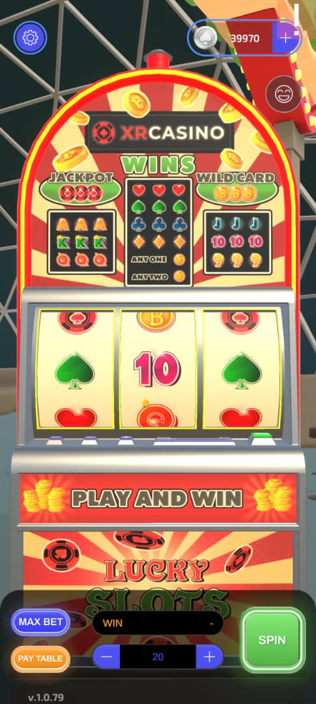

🎰 SLOTS – Game Guide

🎮 Game Actions
📍 Slot Machine Interface
- Reels: The spinning columns that display symbols.
- Spin Button: Tap or click to start the game.
- Bet Adjustment: Use the +/- buttons to set your wager amount.
- Autoplay: Lets the machine spin automatically for a set number of rounds.
- Max Bet: Instantly places the highest possible bet.
- Paytable Button: Displays winning combinations and payouts.
💰 Winning & Payouts
- ✅ If a player wins, they receive their original bet plus the winnings.
- ❌ If they lose, they lose the full amount wagered.
🃏 Wild Card Mechanics
- Wild Symbol: Can substitute for any other symbol to complete a winning combination.
- Example: Two Kings + one Wild = Three Kings (pays as a full combo).
- Small Reward: Even a single Wild symbol or two Wilds without a full combo may grant a small payout.
- Unique Wilds: Each slot game has its own Wild symbol design (check the Paytable).
📊 Paytable – Winning Combinations
| Combination |
Description |
Example Payout (per bet unit) |
| 3x Jackpot Symbol |
Highest win (varies per slot). |
500x |
| 3x High-Paying Symbol |
e.g., Diamonds, 7s |
100x |
| 3x Mid-Paying Symbol |
e.g., BAR, Bells |
50x |
| 3x Low-Paying Symbol |
e.g., Fruits, Cards |
10x |
| 2x Wilds + Any Symbol |
Wilds complete partial wins. |
5x |
| 1–2 Scatter Symbols |
May trigger bonuses or small rewards. |
2x |
🧠 Key Rules
- Scatter Symbols: Often trigger free spins or bonus rounds (not always needing a payline).
- Paylines: Wins usually require matching symbols on active lines (left to right).
- Volatility: High-paying slots reward big wins less often; low-paying slots grant frequent small wins.
- Progressive Jackpots: Some slots pool bets into a growing jackpot (requires max bet).
🎰 Tip: Always check the game’s Paytable for exact symbols, Wild rules, and bonus features!